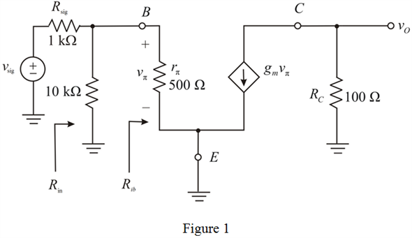

Step 1:
Refer to Figure P6.101 in the text book.
Determine the value of collector current.
Substitute  for
for  and
and  for
for  in the equation.
in the equation.
Determine the value of dc voltage at the collector.
Substitute  for
for  and
and  for
for  in the equation.
in the equation.
Thus, the value of dc voltage at the collector,  is.
is.
Step 2:
Determine the value of base current.
Substitute  for
for  and
and  for
for  in the equation.
in the equation.
Step 3:
Determine the value of base voltage.
Substitute for  in the equation.
in the equation.
Step 4:
Determine the value of base-collector voltage.
Substitute for  and
and  for
for  in the equation.
in the equation.
Since, the base to collector voltage is , the transistor is in active region.
, the transistor is in active region.
Step 5:
Draw the hybrid- equivalent circuit of Figure P6.101 is shown in Figure 1.

Step 6:
Determine the value of trans-conductance.
Substitute for  and
and  for
for  in the equation.
in the equation.
Step 7:
Determine the value of resistance,

.

Substitute  for
for  and for
and for  in the equation.
in the equation.
Step 8:
Determine the value of resistance, .
Substitute  for
for  in the equation.
in the equation.
Thus, the value of resistance,is.
Step 9:
Determine the value of input resistance.
Substitute for  in the equation.
in the equation.
Thus, the value of input resistance, is
is .
.
Step 10:
Apply voltage division rule to calculate the value of voltage, .
Substitute  for
for  and for
and for  in the equation.
in the equation.
Step 11:
Determine the value overall voltage gain.
Substitute for  , for
, for  and
and  for
for  in the equation.
in the equation.
Thus, the value of overall voltage gain, is .
.
Step 12:
Determine the value of signal voltage when.

Substitute for  in the equation.
in the equation.
Thus, the value of signal voltage,  is
is  .
.
Step 13:
Determine the value of base voltage when.
Substitute for ,
,  for and for
for and for  in the equation.
in the equation.
Thus, the value of base voltage,  is
is .
.